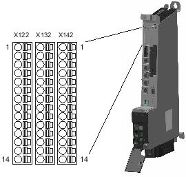

Digital inputs and outputs can be used to connect sensors and actuators to the 14-pin connectors X122 / X132 / X142 on the front panel. The interfaces are permanently assigned:
The following digital inputs and outputs are available:
Digital inputs
Digital outputs
Bidirectional digital inputs/outputs
Assignment of the inputs/outputs to functions can be parameterized as required. The enables for the drives and motors connected to the NCU can be switched using the digital inputs. For example, probe inputs (rapid inputs only) and cam outputs can also be connected.
The terminals are pre-assigned on the NCU with the drive device configuration.
The terminal assignments for terminal strips X122, X132, X142 are listed in the following tables.